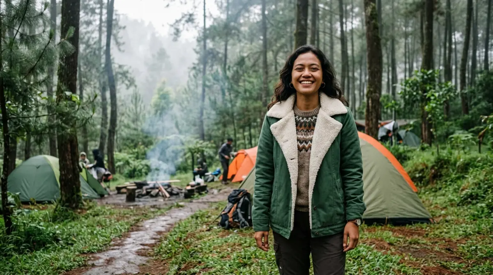

Persiapan baju hangat dan sistem layering penting untuk terhindar dari kedinginan.
Persiapan baju hangat dan sistem layering penting untuk terhindar dari kedinginan.
Udah capek-capek ngajuin cuti tahunan demi healing dari tumpukan kerjaan kantor, eh malah berantakan gara-gara salah bawa baju hangat. Kebayang nggak sih, kamu udah siap nungguin sunrise cantik di Batu bareng orang tersayang, tapi badan malah menggigil parah karena mengabaikan tips memilih jaket untuk camping yang benar?
Alih-alih dapet foto estetik dan pikiran kembali fresh, kamu malah terancam masuk angin, flu, dan tepar pas harus masuk kerja lagi di hari Senin. Sayang banget kan, momen berharga yang susah payah dijadwalkan ini rusak cuma karena persiapan sepele yang terlewat?
Nah, biar kamu nggak nyesel belakangan dan liburan tetap terasa nyaman dari malam sampai pagi, mending kita bahas tuntas cara milih pakaian hangat yang pas buat cuaca pegunungan. Nggak perlu kok sampai beli jaket tebal ala pendaki gunung es, yang penting efektif dan bikin kamu tetap asyik menikmati syahdunya malam.
Memahami Karakteristik Cuaca dan Suhu Malam di Kota Batu
Sebelum kita ngomongin soal bahan dan model jaket, hal pertama yang harus kamu lakukan adalah mengenali "medan tempur". Di dunia kerja, sebelum kamu pitching produk ke klien besar, pastinya kamu butuh riset profil mereka dulu, kan? Nah, hal yang sama juga berlaku buat persiapan ke alam terbuka.
Kota Batu memang sudah terkenal dari dulu punya hawa yang sejuk karena topografinya yang didominasi pegunungan. Tapi, dinginnya kawasan ini punya ritme pergeseran yang wajib kamu antisipasi. Saat sore hari menjelang senja, suhunya biasanya masih sangat bersahabat, berkisar di angka 19 hingga 22 derajat Celcius.
Di suhu segini, rasanya mirip banget kayak suhu AC di ruang meeting kantor—sejuk, adem, dan bikin nyaman. Namun, ceritanya bakal beda begitu matahari benar-benar pamit. Memasuki tengah malam hingga menjelang subuh, suhu udara bisa drop lumayan drastis.
Selain suhu murni, kamu juga berhadapan dengan apa yang disebut wind chill atau hawa dingin yang dibawa oleh hembusan angin gunung. Angin inilah "pelaku utama" yang sering bikin tubuh kita merasa jauh lebih kedinginan dibandingkan angka suhu yang tertera di aplikasi cuaca HP kamu.
Banyak pekamping pemula yang menyepelekan hal ini. Mereka pikir cukup pakai hoodie katun andalan yang biasa dipakai hangout di mall. Padahal, bahan katun itu sangat gampang ditembus angin. Memakai hoodie katun saat subuh di Batu itu ibarat kamu nekat masuk ruang server kantor yang suhu AC-nya disetel maksimal, tapi kamu cuma pakai kemeja kerja tipis. Dijamin langsung kaku! Oleh karena itu, tips memilih jaket untuk camping secara rasional sangatlah penting.
Tips Memilih Jaket untuk Camping yang Tepat dan Anti Ribet
Banyak calon pengunjung yang saking khawatirnya bakal kedinginan, akhirnya menyewa atau meminjam perlengkapan yang overkill atau berlebihan. Membawa barang yang terlalu berat dan besar nyatanya malah bikin liburan jadi ribet sendiri. Supaya koper atau ranselmu tetap ringkas namun tubuh tetap hangat, berikut adalah panduan yang bisa langsung kamu terapkan:
1. Lupakan Jaket Ekspedisi Gunung yang Terlalu Tebal
Sering kali kita melihat jaket gunung tebal yang bentuknya menggelembung besar mirip kulit ban karet (puffer jacket tebal). Jaket yang biasanya berisi bulu angsa asli (down) atau serat sintetis kelas berat ini memang dirancang khusus untuk menghadapi suhu minus derajat atau cuaca bersalju.
Tapi percayalah, untuk sekadar liburan santai di area perkemahan Batu, jaket semacam ini tidak terlalu fungsional. Kenapa begitu? Pertama, volumenya sangat memakan tempat di tasmu. Kedua, jika kamu memakainya saat sedang beraktivitas santai, misalnya saat mendirikan tenda atau meracik kopi, kamu justru akan kegerahan.
Tubuhmu akan memproduksi keringat dari dalam. Nah, keringat yang terjebak di dalam jaket tebal ini nantinya akan mendingin saat kamu berhenti bergerak, yang pada akhirnya malah bikin tubuhmu merasa kedinginan dari dalam. Jadi, mending skip saja jaket model penjelajah kutub ini.
2. Windbreaker adalah Kunci Utama Pertahanan
Seperti yang sudah disinggung sebelumnya, musuh utama kita saat berkemah di dataran tinggi bukanlah sekadar angka suhu udaranya, melainkan angin malam. Oleh sebab itu, tips memilih jaket untuk camping yang paling krusial adalah mencari pakaian yang memiliki fitur windproof atau tahan angin.
Jaket jenis windbreaker biasanya terbuat dari material luar berbahan parasut, nylon, atau polyester dengan kerapatan tinggi. Fungsinya sangat spesifik: memblokir angin agar tidak menembus celah pori-pori kain dan langsung mengenai kulitmu.
Keunggulan lain dari jaket ini adalah bobotnya yang sangat ringan dan mudah dilipat menjadi sekecil kepalan tangan. Meski tipis, jaket ini sangat efektif menjaga panas alami tubuhmu agar tidak terhempas terbawa angin gunung.
3. Tambahkan Lapisan Fleece Ringan Sebagai Pemanas
Sebuah windbreaker memang juara dalam menahan angin, tapi sering kali ia kurang memberikan rasa hangat yang "memeluk" tubuh. Solusi paling cerdas adalah mengombinasikannya dengan bahan fleece atau kain polar. Bahan fleece ini ringan, sangat lembut di kulit, dan memiliki serat berpori yang dirancang untuk menjebak udara hangat dari suhu tubuhmu.
Coba bayangkan sistem kerja ini seperti struktur tim di kantormu. Bahan fleece adalah staf operasional internal yang bekerja di belakang layar untuk menjaga semua sistem (suhu tubuh) tetap berjalan hangat dan stabil.
Sementara itu, windbreaker adalah satpam tangguh di pintu depan yang bertugas menahan segala gangguan keamanan (angin) dari luar. Kamu bisa memilih jaket two-in-one yang lapisan dalamnya sudah menyatu dengan fleece, atau cukup membeli jaket luar dan jaket fleece secara terpisah.

Kombinasi windbreaker dan fleece adalah strategi terbaik untuk menghadapi dinginnya malam di Batu.Konsep Layering Pakaian ala Pekerja Kantoran Cerdas
Dalam dunia petualangan alam terbuka, ada satu sistem berpakaian yang sudah diakui ampuh untuk menjaga suhu tubuh tetap nyaman, yaitu layering system atau sistem pakaian berlapis.
Konsep ini sangat fleksibel dan jauh lebih masuk akal dibandingkan hanya mengandalkan satu buah jaket super tebal. Biar gampang dicerna, mari kita analogikan dengan jenjang karir atau manajemen tugas di kantormu.
Lapisan Pertama (Base Layer): Fondasi Dasar
Ini adalah lapisan baju yang bersentuhan langsung dengan kulit tubuhmu. Hindari memakai kaos berbahan katun 100% untuk lapisan dalam. Katun memang nyaman dan mudah menyerap keringat, tapi material ini sangat lambat untuk kering. Pilihlah kaos berbahan sintetis seperti polyester campuran atau spandex yang punya fitur quick-dry (cepat kering).
Tugas base layer ini mirip seperti tugas administratif dasar: kelihatannya sepele dan tidak menonjol, tapi kalau berantakan (kulit basah oleh keringat), maka seluruh performa tim (tubuhmu) akan terganggu dan kamu bakal merasa kedinginan.
Lapisan Kedua (Mid Layer): Sang Insulator
Di tahapan inilah pakaian berbahan fleece atau sweater ringan mengambil peran. Tugas mid layer adalah memastikan panas alami yang diproduksi tubuhmu tidak kabur menguap ke udara bebas. Lapisan ini ibarat jajaran manajemen menengah di kantor yang memastikan operasional inti berjalan lancar dan target kehangatan tubuh tercapai. Saat malam belum terlalu larut, memakai dua lapis ini saja biasanya sudah cukup bikin nyaman.
Lapisan Ketiga (Outer Layer): Pelindung Utama
Ini adalah posisinya si jaket windbreaker yang kedap angin tadi. Dipakai pada bagian paling luar, lapisan ini bertugas memblokir angin kencang serta rintik embun yang mulai turun. Ini adalah CEO perusahaan pelindung tubuhmu yang berani berhadapan langsung dengan ancaman eksternal.
Dengan teknik tiga lapis ini, kamu bisa leluasa menyesuaikan diri; tinggal lepas satu lapisan jika mulai gerah, atau pakai kembali jika angin malam mulai menusuk tulang.
Kenyamanan adalah Bukti Kepedulian
Ketika kamu memutuskan untuk menghabiskan akhir pekan di alam, tujuan terbesarnya tentu mencari ketenangan, meresapi keindahan, dan mempererat bonding tanpa harus menderita.
Mengetahui tips memilih jaket untuk camping yang tepat adalah langkah mandiri yang cerdas. Namun, pengalaman yang berkesan juga sangat dipengaruhi oleh tempat kamu berkemah.
Sebagai contoh, fasilitas dan pengelolaan di Batu Sunrise Camp dirancang dengan sangat memperhatikan detail tersebut. Lokasi camp yang ditata dengan baik tidak hanya menawarkan panorama lampu kota yang memukau tanpa halangan, tetapi juga menciptakan ekosistem yang mendukung kenyamanan pengunjung.
Ada akses air bersih, toilet yang terawat, ruang antar tenda yang memberikan privasi, dan tentu saja tata letak yang memaksimalkan perlindungan dari arah angin ekstrem. Ini adalah bentuk komitmen bahwa penyedia layanan sangat peduli agar tamu tidak sekadar datang dan tidur, melainkan benar-benar menikmati waktu luang mereka dengan layak.
Apalagi bagi kamu yang butuh pelarian sejenak dari stresnya rutinitas harian, dukungan fasilitas yang memadai membuat proses healing terasa lebih nyata dan tidak menambah beban pikiran.
Persiapkan Sekarang, Nikmati Kemudian
Waktu luang bersama pasangan, sahabat, atau keluarga itu ibarat saldo cuti tahunan—jumlahnya terbatas dan sangat berharga. Jangan sampai kamu menyia-nyiakan momen yang sudah kamu rencanakan dari jauh hari hanya karena mengabaikan persiapan pakaian hangat. Penyesalan selalu datang belakangan, sering kali saat kamu sedang menggigil di dalam tenda sambil memeluk lutut.
Bayangkan betapa sempurnanya malam itu jika kamu bisa duduk santai dengan jaket yang nyaman, memegang secangkir cokelat panas, sambil memandangi hamparan lampu kota Batu yang berkelap-kelip menyerupai lautan bintang.
Itu adalah kemewahan sederhana yang sesungguhnya. Jadi, mumpung masih ada waktu sebelum hari keberangkatan, bongkar lemari pakaianmu atau sempatkan mampir ke toko perlengkapan luar ruang terdekat. Pilih pakaian yang tepat guna, terapkan strategi layering, dan bersiaplah menyambut pengalaman berkemah yang bebas dari rasa dingin dan penuh dengan memori indah.
FAQ